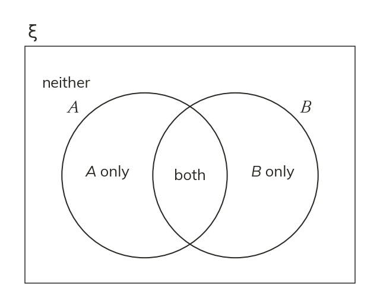

The structure
In a Venn diagram, the rectangle is the universal set ξ. Each element appears once, in the region matching every set it belongs to.
in a Venn diagram, the rectangle represents the universal set ξ, and each set is a closed region (usually a circle) inside it. Every element of ξ appears exactly once, in whichever region matches every set it belongs to – found by checking it against each set's condition in turn, never by guessing from the space available.